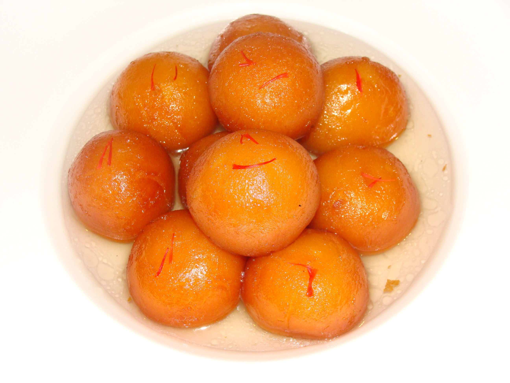

Ingredients
For the Jamun balls
1.Milk Powder - 1/2 cup
2.Maida (All purpose flour) - 2 tsp
3.Rava (Semolina) - 1 tsp
4.Baking Soda - 1/4 tsp
5.Milk - 2 tbsp
6.Lemon Juice - 1/2 tsp
7.Ghee or Butter - 1 tbsp
For the Sugar Syrup
1.Sugar - 1.5 cup
2.Water - 1.5 cup
3.Rose Essence (or rose water) - 1 tsp
4.Cardamom Powder - 1/4 tsp
5.Lemon Juice - 1 tsp
Method
For making Sugar Syrup
1. Take the sugar and water in a sauce pan. Boil it.
2. Reduce the flame and let it simmer for about 5 minutes.
3. Add the lemon juice, rose essence and cardamom powder to the syrup.
4. Switch off.
For making Jamun Balls
1. In a mixing bowl, take the milk powder, maida, baking soda and rava. Combine
it.
2. Add the lemon juice and butter/ghee and mix it well till you get a crumbly
flour.
3. Add the milk and mix it. The dough may appear to be very sticky.
4. Let it rest for about 5 minutes. By now most of the moisture is absorbed by
the dough.
Tips : If you feel the dough feels dry, add a few drops of milk. The dough
should be soft and moist. Only then you will get smooth balls without any
cracks.
5. Divide it into equal portions. Make smooth balls with your palms. Make all
the balls and keep it covered under a damp kitchen towel to prevent them from
getting dried up.
6. Heat oil in a frying pan and fry on medium low heat till it becomes
golden brown. It is important that you fry on low heat so that the balls
are cooked through.
7. Put the fried jamun balls in the warm sugar syrup. Let it soak for 45 minutes to an hour. Yummy gulob jamun is ready.